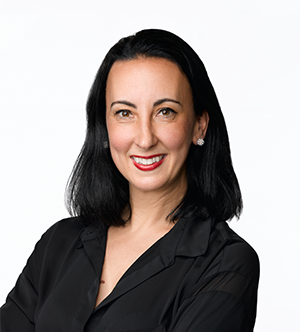

Talk Title: Information in images for drug discovery: image-based profiling
Start Time: 9:40 AM PDT
Speaker:
Inti Zlobec, Professor, University of Bern.

Abstract: Cell images contain a vast amount of quantifiable information about the status of the cell: for example, whether it is diseased, whether it is responding to a drug treatment, or whether a pathway has been disrupted by a genetic mutation. We extract hundreds of features of cells from images. Just like transcriptional profiling, the similarities and differences in the patterns of extracted features reveal connections among diseases, drugs, and genes. Improving this pipeline is an active area of research, from feature extraction to batch correction to quality control to assessing similarities.
We are harvesting similarities in image-based profiles to identify, at a single-cell level, how diseases, drugs, and genes affect cells, which can uncover small molecules’ mechanism of action, discover gene functions, predict assay outcomes, discover disease-associated phenotypes, identify the functional impact of disease-associated alleles, and find novel therapeutic candidates. As part of the JUMP-Cell Painting Consortium (Joint Undertaking for Morphological Profiling-Cell Painting) we are aiming to establish experimental and computational best practices for image-based profiling (https://jump-cellpainting.broadinstitute.org/results) and produce the world’s largest public Cell Painting gene/compound image resource, with 140,000 perturbations in five replicates, to be released November 2022. With these data and new technologies like Pooled Cell Painting and variants of the assay like LipocyteProfiler and CardioProfiler, we hope to bring drug discovery-accelerating applications to practice.
Speaker Bio:
Inti Zlobec holds the position of Professor (Extraordinarius) of Digital Pathology at the Institute of Pathology, University of Bern, Switzerland. She graduated with a PhD degree in Experimental Pathology, from McGill University, Montreal, Canada in 2007 before completing a post-doctoral fellowship at the Institute of Pathology, University Hospital Basel, where she conducted tissue-based research in the field of colorectal cancer using biostatistical models. After habilitating in 2010, she received a position at the Institute of Pathology, University of Bern, where she established and led the Translational Research Unit (TRU) and later the Tissue Bank Bern (TBB). Inti became Associate Professor in 2014. Now, she leads an inter-disciplinary research group of students and researchers using artificial intelligence and machine learning as tools to study pathology images along with other data types to discover and validate novel prognostic and predictive biomarkers for colorectal cancer patients. Inti is a member of the Executive Team of the Center for Artificial Intelligence in Medicine (CAIM) of the University of Bern, Co-Founder and President of the Swiss Consortium for Digital Pathology (SDiPath), Chair of the European Society of Pathology (ESP) Working Group Digital and Computational Pathology and Board Member of the European Society of Digital and Integrative Pathology (ESDIP).
Talk Title: The AI revolution in multimodal radiology informatics
Start Time: 9:20 AM CDT
Speaker:
Ron Summers, Senior Investigator, National Institute of Health
 Abstract:
Abstract: Deep learning has enabled sophisticated AI analysis of radiology images, including CT, MRI, ultrasound, and radiography. Multimodal AI takes this sophistication to a new level. The incorporation of both clinical text and radiology images into multimodal models enables even more accurate predictions and expands the number of clinical use cases. Incorporation of multimodal imaging data sets is the next logical step. In this presentation, I will explore some of the latest developments in multimodal radiology AI with the goal to improve patient health.”
Speaker Bio:
Dr. Summers received the BA degree in physics and the MD and PhD degrees in Medicine/Anatomy and Cell Biology from the University of Pennsylvania. He completed a medical internship at the Presbyterian-University of Pennsylvania Hospital, Philadelphia, PA, a radiology residency at the University of Michigan, Ann Arbor, MI, and an MRI fellowship at Duke University, Durham, NC. In 1994, he joined the Radiology and Imaging Sciences Department at the NIH Clinical Center in Bethesda, MD. where he is now a tenured Senior Investigator and Staff Radiologist. He is a Fellow of the Society of Abdominal Radiologists and of the American Institute for Medical and Biological Engineering (AIMBE). He directs the Imaging Biomarkers and Computer-Aided Diagnosis (CAD) Laboratory and is former and founding Chief of the NIH Clinical Image Processing Service. In 2000, he received the Presidential Early Career Award for Scientists and Engineers, presented by Dr. Neal Lane, President Clinton's science advisor. In 2012, he received the NIH Director's Award, presented by NIH Director Dr. Francis Collins. In 2017, he received the NIH Clinical Center Director's Award.
He has co-authored over 500 journal, review and conference proceedings articles and is a co-inventor on 14 patents. He is a member of the editorial boards of the Journal of Medical Imaging, Radiology: Artificial Intelligence and Academic Radiology and a past member of the editorial board of Radiology. He is a program committee member of the Computer-aided Diagnosis section of the annual SPIE Medical Imaging conference and was co-chair of the entire conference in 2018 and 2019. He was Program Co-Chair of the 2018 IEEE ISBI symposium.